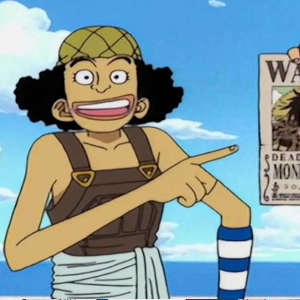

Selecione um personagem
- 
Luffy
Luffy o Pirata elástico, determinado e otimista, líder dos Chapéus de Palha. Habilidades da Gomu Gomu no Mi, esticando-se para ataques poderosos

Luffy o Pirata elástico, determinado e otimista, líder dos Chapéus de Palha. Habilidades da Gomu Gomu no Mi, esticando-se para ataques poderosos